건축기사 (2012-05-20 기출문제)
1과목: 건축계획
1. 세대수가 250세대인 복도형 공동주택에 설치하여야 하는 승용승강기의 최소 대수는? (단, 승용승강기를 설치하여야 하는 공동주택이며, 6인승 승강기의 경우)
- 2대
- 3대
- 4대
- 5대
(정답률: 59%)

2. 소규모 주택에서 리빙 다이닝 키친형(LDK형)을 채택하는 이유와 가장 거리가 먼 것은?
- 주부의 동선이 단축된다.
- 공간의 이용률이 극대화된다.
- 조리, 식사, 정리작업이 능률화된다.
- 겨울에 취사용 화로로 난방을 겸할 수 있다.
(정답률: 90%)
3. 이슬람(사라센) 건축 양식에서“미나렛(Minaret)”이 의미 하는 것은?
- 이슬람교의 신학원 시설
- 모스크의 상징인 높은 탑
- 메카 방향으로 설치된 실내 제단
- 열주나 아케이트로 둘러싸인 중정
(정답률: 70%)
4. 공장건축의 건축형식에 관한 설명으로 옳지 않은 것은?
- 분관식은 추후에 확장계획에 따른 증축이 용이한 형식이다.
- 집중식은 내부상의 배치를 변경할 경우 융통성 및 탄력성이 없다.
- 분관식은 대지의 형태가 부정형이거나 지형상의 고저차가 있을 때 유리하다.
- 집중식은 유사한 기능의 공장을 근접하여 블록화하거나 단일 건축물로 배치한 형식이다.
(정답률: 50%)
5. 호텔계획에 관한 설명으로 옳지 않은 것은?
- 시티 호텔은 대부분 고밀도의 고층형이다.
- 호텔의 적정규모는 일반적으로 시장성을 따른다.
- 리조트 호텔의 건축형식은 주변 조건에 따라 자유롭게 이루어진다.
- 커머셜 호텔은 일반적으로 리조트 호텔에 비해 넓은 공공공간(public space)을 갖는다.
(정답률: 82%)
6. 초고층 오피스 건물의 코어형식 선정시 일반 저층 건물과 비교하여 특별히 고려해야 할 사항은?
- 횡하중
- 유효율
- 건물의 입면
- 업무공간의 융통성
(정답률: 78%)
7. 케빈 린치(K.Lynch)가 주장한 도시이미지를 결정하는 도시구성 요소에 해당하지 않는 것은?
- Lines
- Nodes
- Edges
- Landmarks
(정답률: 63%)
8. 능률적인 작업용량으로서 10만권을 수장할 도서관 서고의 면적으로 가장 알맞은 것은?
- 350m2
- 500m2
- 800m2
- 950m2
(정답률: 90%)
9. 극장 관객석에서 잘 보여야 되는 동시에 많은 관객을 수용해야 하는 요건의 만족에 큰 무리가 없다고 보는 1차 허용한도는?
- 15 m
- 22 m
- 30 m
- 38 m
(정답률: 84%)
10. 학교의 운영방식에 관한 설명으로 옳지 않은 것은?
- 플래툰형은 교과교실형보다 학생의 이동이 많다.
- 종합교실형은 초등학교 저학년에 가장 권장할 만한 형식이다.
- 달톤형은 규모 및 시설이 다른 다양한 형태의 교실이 요구된다.
- 일반 및 특별교실형은 우리나라 중학교에서 일반적으로 사용되는 방식이다.
(정답률: 73%)
11. 어느 학교의 1주간의 평균수업시간은 50시간이며 설계 제도실이 사용되는 시간은 25시간이다. 설계제도실이 사용되는 시간 중 5시간은 구조강의를 위해 사용된다면, 이 설계제도실의 이용률과 순수율은?
- 이용율 50%, 순수율 80%
- 이용율 50%, 순수율 10%
- 이용율 80%, 순수율 10%
- 이용율 80%, 순수율 50%
(정답률: 85%)
12. 병원건축의 시설규모를 결정하는 기준이 되는 것은?
- 병실의 면적
- 근무자의 수
- 진료실의 면적
- 입원환자의 병상수
(정답률: 86%)
13. 쇼핑센터에서 전체면적에 대한 중심상점(핵상점)의 일반적인 면적비는?
- 약 5%
- 약 25%
- 약 50%
- 약 75%
(정답률: 62%)
14. 바로크 시대의 건축적 특징과 가장 거리가 먼 것은?
- 풍부한 장식
- 공간의 해방
- 고전건축의 복원
- 유동하는 벽체
(정답률: 75%)
15. 전시실의 순회형식 중 많은 실을 순서별로 통하여야하는 불편이 있어 대규모의 미술관 계획에 적용이 바람직 하지 않은 것은?
- 복도 형식
- 갤러리 형식
- 중앙홀 형식
- 연속순로 형식
(정답률: 90%)
16. 다음 중 아파트 단위주호 평면계획에서 공간의 융통성을 부여하는 방법과 가장 거리가 먼 것은?
- 발코니 면적을 가급적 크게 한다.
- 식당과 거실을 동일실로 하고 부엌을 분리한다.
- 침실은 서로 인접되지 않도록 하여 독립성을 유지한다.
- 거실에 인접한 침실의 출입은 거실을 거치지 않도록 한다.
(정답률: 49%)
17. 다음 중 백화점 기둥간격의 결정요소와 가장 거리가 먼 것은?
- 지하 주차장의 주차방법
- 진열대의 치수와 배열법
- 엘리베이터의 배치 방법
- 각 층별 매장의 상품구성
(정답률: 76%)
18. 미술관 전시실의 조명설계에 관한 설명으로 옳지 않은 것은?
- 광색이 부드럽고 밝기의 변화가 있어야 한다.
- 광원에 의한 현휘를 방지하도록 한다.
- 대상에 따라서 스포트라이트도 고려되어야 한다.
- 관람객의 그림자가 전시물 위에 생기지 않도록 한다.
(정답률: 79%)
19. 주택의 거실계획에 관한 설명으로 옳지 않은 것은?
- 거실에서 문이 열린 침실의 내부가 보이지 않게 한다.
- 거실이 다른 공간들을 연결하는 단순한 통로의 기능화가 되지 않도록 한다.
- 거실의 출입구에서 의자나 소파에 앉을 경우 동선이 차단되지 않도록 한다.
- 일반적으로 전체 연면적의 40~50% 정도의 규모로 계획하는 것이 바람직하다.
(정답률: 86%)
20. 백화점 매장에 에스컬레이터를 설치할 경우, 설치 위치로 가장 알맞은 곳은?
- 매장의 한 쪽 측면
- 매장의 가장 깊은 곳
- 백화점의 주출입구 근처
- 백화점의 주출입구와 엘리베이터 존의 중간
(정답률: 86%)
2과목: 건축시공
21. 흙파기공법 중 지반이 극히 연약하여 온통파기를 할 수 없을 때에 측벽이나 주열선 부분만을 먼저 파내고 그곳에 기초와 지하구조물을 축조한 다음 나머지 중앙부분을 파내고 나머지 구조물을 완성하는 흙파기 공법은?
- 트랜치 컷(trench cut)공법
- 아일랜드(island method)공법
- 뉴매틱웰케이슨(pneumatic wall caisson)공법
- 지하연속벽공법
(정답률: 79%)
22. 블록쌓기에서 벽량이란 단위면적(m2)에 대한 그 면적내에 있는 무엇의 비율인가?
- 내력벽의 길이
- 내력벽의 두께
- 내력벽의 총 면적
- 내력벽의 총 부피
(정답률: 59%)
23. 유리섬유, 합성섬유 등의 망상포를 적층하여 도포하는 도막방수 공법은?
- 시멘트액체방수공법
- 라이닝공법
- 엠브레인공법
- 루핑공법
(정답률: 65%)
24. 공사계약제도 중 공사관리방식(CM:Construction Management)의 단계별 업무내용 중 비용의 분석 및 VE기법의 도입, 대안공법의 검토를 하는 단계는?
- Pre-Design단계(기획단계)
- Design단계(설계단계)
- Pre-Construction단계(입찰·발주단계)
- Construction단계(시공단계)
(정답률: 79%)
25. 장 span의 구조물 시공 시 수축대(폭 1m 정도 남겨놓음)만 설치하고, 콘크리트 타설 후 초기수축(보통 6주 후)을 기다렸다가 그 부분을 콘크리트 타설하여 일체화하는 조인트는?
- Construction Joint
- Delay Joint
- Cold Joint
- Expansion Joint
(정답률: 75%)
26. 보통 창유리의 특성 중 투과에 관한 설명으로 옳지 않은 것은?
- 투사각 0도일 때 투명하고 청결한 창유리는 약 90%의 광선을 투과한다.
- 보통의 창유리는 많은 양의 자외선을 투과시키는 편이다.
- 보통 창유리도 먼지가 부탁되거나 오염되면 투과율이 현저하게 감소한다.
- 광선의 파장이 길고 짧음에 따라 투과율이 다르게 된다.
(정답률: 75%)
27. 타일크기가 10㎝×10㎝ 이고 가로세로 줄눈을 6mm로 할 때 면적 1m2에 필요한 타일의 정미수량은?
- 97매
- 92매
- 89매
- 85매
(정답률: 66%)
28. 서중콘크리트에 대한 설명으로 옳은 것은?
- 동일 슬럼프를 얻기 위한 단위수량이 많아진다.
- 장기강도의 증진이 크다.
- 콜드조인트가 쉽게 발생하지 않는다.
- 워커빌리티가 일정하게 유지된다.
(정답률: 67%)
29. 프리캐스트 철근 콘크리트 부재에 사용하는 콘크리트의 배합과 관련한 기준으로 옳지 않은 것은?
- 단위 시멘트량의 최소값은 300kg/m3로 한다.
- 물시멘트비는 55% 이하로 한다.
- 콘크리트에 함유된 염화물은 염화물이온량으로서 0.5kg/m3 이하로 한다.
- 동결융해작용을 받는 콘크리트는 AE콘크리트로 한다.
(정답률: 65%)
30. 합성고무와 열가소성수지를 사용하여 1겹으로 방수효과를 내는 공법은?
- 도막방수
- 시트방수
- 아스팔트방수
- 표면도포방수
(정답률: 79%)
31. 시멘트 600포대를 저장할 수 있는 시멘트 창고의 최소 필요면적으로 옳은 것은?
- 18.46m2
- 21.64m2
- 23.25m2
- 25.84m2
(정답률: 69%)
32. 목공사에 사용되는 철물에 대한 설명 중 옳지 않은 것은?
- 못의 길이는 박아대는 재두께의 2.5배 이상이며, 마구리 등에 박는 것은 3.0배 이상으로 한다.
- 감잡이쇠는 큰 보에 걸쳐 작은 보를 받게 하고, 안장쇠는 평보를 대공에 달아매는 경우 또는 평보와 ㅅ자보의 밑에 쓰인다.
- 볼트 구멍은 볼트지름보다 3mm 이상 커서는 안된다.
- 듀벨은 볼트와 같이 사용하여 듀벨에는 전단력, 볼트에는 인장력을 분담시킨다.
(정답률: 68%)
33. 로드의 선단에 붙은 스크루 포인트(screw point)를 회전시키며 압입하여 흙의 관입저항을 측정하고, 흙의 경도나 다짐상태를 판정하는 시험은?
- 베인시험(Vane Test)
- 딘월샘플링(Thin wall sampling)
- 표준관입시험(Penetration test)
- 스웨덴식 사운딩 시험(Swedish sounding test)
(정답률: 60%)
34. 다음 중 도장공사에 관한 주의사항으로 옳지 않은 것은?
- 바탕의 건조가 불충분하거나 공기의 습도가 높을 때에는 시공하지 않는다.
- 불투명한 도장일 때에는 초벌부터 정벌까지 같은 색으로 시공해야 한다.
- 야간에는 색을 잘못 도장할 염려가 있으므로 시공하지 않는다.
- 직사광선은 가급적 피하고 도막이 손상될 우려가 있을 때에는 도장하지 않는다.
(정답률: 87%)
35. 벽돌에 생기는 백화를 방지하기 위한 방법으로 옳지 않은 것은?
- 10%이하의 흡수율을 가진 양질의 벽돌을 사용한다.
- 벽돌면 상부에 빗물막이를 설치한다.
- 파라핀 도료를 발라 염류가 나오는 것을 방지한다.
- 줄눈 모르타르에 석회를 넣어 바른다.
(정답률: 84%)
36. 공기의 유통이 좋지 않은 지하실과 같이 밀폐된 방에 사용하는 미장마무리 재료 중 가장 적합하지 않은 것은?
- 돌로마이트 플라스터
- 혼합 석고 플라스터
- 시멘트 모르타르
- 경석고 플라스터
(정답률: 79%)
37. 건축공사 시 가설건축물에 대한 설명으로 옳지 않은 것은?
- 시멘트 창고는 통풍이 되지 않도록 출입구 외에는 개구부설치를 금한다.
- 화기위험물인 유류·도료 등의 인화성 재료저장소는 벽, 지붕, 천장의 재료를 방화구조 또는 불연구조로 하고 소화설비를 갖춘다.
- 변전소의 위치는 안전을 고려하여 현장사무소에 최대한 멀리 떨어진 곳이 좋다.
- 현장사무소의 경우 필요면적은 3.3m2/인 정도로 계획한다.
(정답률: 83%)
38. 콘크리트 중의 공기량에 대한 설명으로 옳지 않은 것은?
- AE제의 혼입량이 증가할수록 공기량은 증가한다.
- 콘크리트의 온도가 높아질수록 공기량은 증가한다.
- 시멘트의 분말도 및 단위시멘트량이 증가하면 공기량은 감소한다.
- 슬럼프가 커지면 공기량은 증가한다.
(정답률: 50%)
39. 다음 공사계약방식 중 공사수행방식에 따른 분류에 해당하지 않는 것은?
- 실비정산보수가산계약
- 설계·시공분리계약
- 설계·시공일괄계약
- 턴키계약
(정답률: 78%)
40. 다음 중 발주자에 의한 현장관리 제도라고 볼 수 없는 것은?
- 착공신고제도
- 공정관리
- 현장회의 운영
- 중간관리일
(정답률: 54%)
3과목: 건축구조
41. 다음 용어 중 서로 관련이 가장 적은 것은?
- 기둥 –메탈터치(Metal Touch)
- 인장가새 –턴버클(turn buckle)
- 주각부 –거셋 플레이트(Gusset Plate)
- 중도리 –쌔그로드(sag rod)
(정답률: 56%)
42. 그림과 같은 2Ls-90×90×7 조립압축재의 단면2차반경 rY 는 얼마인가? (단, 개재의 중심축에 대한 단면2차반경 ry 27.6㎜, Cy 는 24.6㎜)
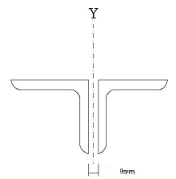
- 38.5m
- 40.1m
- 52.2m
- 58.8m
(정답률: 54%)
43. 다음 그림과 같은 단순 인장접합부의 강도한계상태에 따른 고력볼트의 설계전단강도를 구하면?(단, 강재의 재질은 SS400이며 고력볼트는 M22(F10T), 공칭전단강도 Fnv =500M/mm2) (문제 오류로 실제 시험에서는 모두 정답처리 되었습니다. 여기서는 1번을 누르면 정답 처리 됩니다.)
- 540kN
- 550kN
- 560kN
- 570kN
(정답률: 56%)
44. 다음과 같은 조건의 1방향 슬래브에서 처짐을 계산하지 않고 정할 수 있는 슬래브의 최소 두께는?
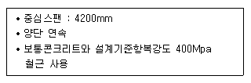
- 150m
- 180m
- 200m
- 220m
(정답률: 60%)
45. 그림과 같은 장방형 기둥단면에 중립축이 단면의 변에 있을 때 이 철근콘크리트 기둥단면의 중립축에 대한 단면1차모멘트 값은? (단, AC = At =30cm2, 탄성계수비 n = 15, 단면에 표시된 길이의 단위는 ㎝)
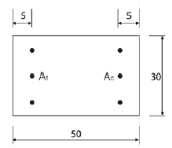
- 58500cm3
- 59500cm3
- 6⑤00cm3
- 61500cm3
(정답률: 42%)
46. 양단이 단순지지인 기둥에서 단면이 ɑ×ɑ이고 길이가 l인 경우, 기둥이 받을 수 있는 축하중 P에 관한 설명으로 옳은 것은? (단, E는 탄성계수, I는 단면2차모멘트임)
- P는 E에 비례, a3 에 비례, l 에 반비례
- P는 E에 비례, a3 에 비례, l2 에 반비례
- P는 E에 비례, a4 에 비례, l 에 반비례
- P는 E에 비례, a4 에 비례, l2 에 반비례
(정답률: 45%)
47. 그림과 같은 옹벽에 토압이 10kN이 가해지는 경우 이 옹벽이 전도되지 않기 위해서는 어느 정도의 자중(自重)을 필요로 하는가?
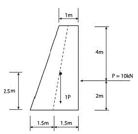
- 11.71kN
- 10.44kN
- 12.71kN
- 9.71kN
(정답률: 58%)
48. 인장을 받는 이형철근의 정착길이(ld)는 기본정착길이 (ldb)에 보정계수를 에 영향을 미치는 사항이 아닌 것은?
- 콘크리트 강도 계수
- 경량콘크리트 계수
- 에폭시 도막 계수
- 철근배치 위치계수
(정답률: 46%)
49. 그림과 같은 직사각형 단면에서 0점에 대한 단면극 2차 모멘트 IP의 값은?
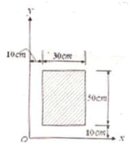
- 1,600,000cm4
- 2,400,000cm4
- 3,000,000cm4
- 3,200,000cm4
(정답률: 46%)
50. 그림과 같은 구조물의 판별로 옳은 것은?
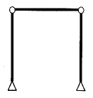
- 불안정
- 정정
- 1차 부정정
- 2차 부정정
(정답률: 64%)
51. 다음 중 철골트러스의 특성에 대한 설명으로 옳지 않은 것은?
- 직선 부재들이 삼각형의 형태로 구성되어 안정적인 거동을 한다.
- 트러스의 개방된 웨브공간으로 전기배선이나 덕트등과 같은 설비배관의 통과가 가능하다.
- 부정정차수가 낮은 트러스의 경우에는 일부 부재나 접합부의 파괴가 트러스의 붕괴를 야기할 수 있다.
- 직선 부재로만 구성되기 때문에 비정형 건축물의 구조체에는 도입이 어렵다.
(정답률: 70%)
52. 그림과 같은 구조에서 C 단에 생기는 모멘트는?
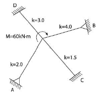
- 2.4kNㆍm
- 5kNㆍm
- 6.5kNㆍm
- 10kNㆍm
(정답률: 66%)
53. KBC2009 지반의 분류에 따른 지반종류와 호칭이 옳게 연결된 것은?(오류 신고가 접수된 문제입니다. 반드시 정답과 해설을 확인하시기 바랍니다.)
- SA: 보통암 지반
- SB: 연암 지반
- SC: 경암 지반
- SD: 단단한 토사 지반
(정답률: 64%)
54. 그림과 같은 철골구조에서 KB/KC=0 일 때 기둥의 좌굴길이는? (단, 수평력에 의해 수평변형이 생길 때)
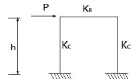
- 0.5h
- 0.7h
- 1.0h
- 2.0h
(정답률: 55%)
55. 강도설계법에서 직접설계법을 이용한 슬래브 설계시 적용조건으로 옳지 않은 것은?
- 각 방향으로 3경간 이상이 연속되어야 한다.
- 슬래브판들은 단변경간에 대한 장변경간의 비가 2이하인 직사각형이어야 한다.
- 각 방향으로 연속한 받침부 중심간 경간길이의 차이는 긴 경간의 1/3이하이어야 한다.
- 모든 하중은 연진하중으로서 슬래브판 전체에 등 분포되어야 하며 활하중은 고정하중의 3배 이하이어야 한다.
(정답률: 56%)
56. 한계상태 설계법에 따른 강구조 이음부에 대한 설계 세칙 중 옳지 않은 것은?
- 응력을 전달하는 단속모살용접이음부의 길이는 모살 사이즈의 15배 이상 또한 50㎜ 이상을 원칙으로 한다.
- 응력을 전달하는 겹침이음은 2열 이상의 모살용접을 원칙으로 한다.
- 고력볼트의 구멍중심간 거리는 공칭직경의 2.5배 이상으로 한다.
- 고력볼트의 구멍중심에서 볼트머리 또는 너트가 접하는 재의 연단까지의 최대거리는 판두께의 12배이하 또는 150㎜ 이하로 한다.
(정답률: 41%)
57. 다음 그림과 같은 단순보에 등변분포하중이 작용하고 있을 때 보의 휨모멘트도 몇 차 곡선이 되는가?
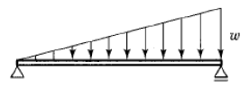
- 2차
- 3차
- 4차
- 5차
(정답률: 60%)
58. 그림과 같은 트러스의 N1, N2 부재력(절대값)으로 옳은 것은?
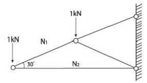
- N1= 2kN, N2= 1.73kN
- N1= 1kN, N2= 0.866kN
- N1= 1.5kN, N2= 1kN
- N1= 1kN, N2= 1.732kN
(정답률: 47%)
59. 그림과 같은 T형보(G1)의 유효폭 B의 값은? (단, 슬래브 두께는 120mm, 보의 폭은 300mm)
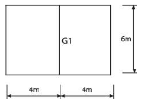
- 150 ㎝
- 192 ㎝
- 222 ㎝
- 400 ㎝
(정답률: 52%)
60. 다음 보에서 B점으로부터 2개의 하중이 지나갈 때 최대 휨모멘트가 발생하는 거리 x를 구하면?
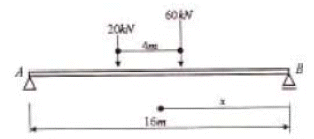
- 6.5
- 7.5
- 8.5m
- 9.5m
(정답률: 57%)
4과목: 건축설비
61. 500명을 수용하는 극장에서 실온을 20℃로 유지하기 위한 필요 환기량은? (단, 외기온도는 10℃, 1인당 발열량은 60W, 공기의 정압비열은 1.01kJ/㎏ㆍK, 공기의 밀도는 1.2㎏/m3이다.)
- 약 8910 m3/h
- 약 12820 m3/h
- 약 16210 m3/h
- 약 18450 m3/h
(정답률: 54%)
62. 에스컬레이터에 관한 설명으로 옳지 않은 것은?
- 경사는 일반적으로 30° 이하로 한다.
- 엘리베이터에 비해 전동기의 기동횟수가 많다.
- 800형 에스컬레이터의 공칭수송능력은 6000명/h 이다.
- 발판(step)의 정격속도는 일반적으로 30m/min 이하
(정답률: 51%)
63. 배선용 차단기(WCCB)에 관한 설명으로 옳지 않은 것은?
- 각 극을 동시에 차단하므로 결상의 우려가 없다.
- 과부하 및 단락사고 차단후 재투입이 불가능하다.
- 교류 600[V] 이하, 직류 250[V] 이하의 저압옥내 전로의 보호를 위해 사용된다.
- 개폐기구 및 트립장치 등이 절연물인 케이스에 내장되어 있어 안전하게 사용이 가능하다.
(정답률: 57%)
64. 전기설비의 배선공사에 관한 설명으로 옳지 않은 것은?
- 금속관 공사는 외부적 응력에 대해 전선보호의 신뢰성이 높다.
- 합성수지관 공사는 열적 영향이나 기계적 외상을 받기 쉬운 곳에서는 사용이 곤란하다.
- 금속 덕트 공사는 다수회선의 절연전선이 동일 경로에 부설되는 간선 부분에 사용된다.
- 플로어 덕트 공사는 옥내의 건조한 콘크리트 바닥면에 매입 사용되나 강ㆍ약전을 동시에 배선할 수 없다.
(정답률: 65%)
65. 다음 중 온수난방에서 복관식 배관에 역환수 방식(reverse return)을 채택하는 가장 주된 이유는?
- 공사비를 절약할 목적으로
- 순환펌프를 설치하기 위하여
- 온수의 순환을 평균화시킬 목적으로
- 중력식으로 온수를 순환하기 위하여
(정답률: 69%)
66. 건물ㆍ시설 등에서 발생하는 오수를 다시 처리하여 생활용수ㆍ공업용수 등으로 재이용하는 시설로 정의되는 것은?
- 배수설비
- 하수관거
- 중수도
- 개인하수도
(정답률: 81%)
67. 흡수식 냉동기에 관한 설명으로 옳지 않은 것은?
- 열에너지가 아닌 기계적 에너지에 의해 냉동효과를 얻는다.
- 냉방용의 흡수냉동기는 물과 브롬화리튬의 혼합용 액을 사용한다.
- 증발기, 흡수기, 재생기(발생기), 응축기 등으로 구성되어 있다.
- 2중효용 흡수식 냉동기는 단효용 흡수식 냉동기보다 에너지 절약적이다.
(정답률: 75%)
68. 도시가스 배관 시공에 관한 설명으로 옳지 않은 것은?
- 배관 도중에 신축 흡수를 위한 이음을 한다.
- 건물의 주요 구조부를 관통하지 않도록 한다.
- 건물 내에서는 반드시 은폐배관으로 한다.
- 건물의 규모가 크고 배관 연장이 길 경우는 계통을 나누어 배관한다.
(정답률: 82%)
69. 할로겐 램프에 관한 설명으로 옳지 않은 것은?
- 백열전구에 비해 수명이 길다.
- 연색성이 좋고 설치가 용이하다.
- 흑화가 거의 일어나지 않고 광속이나 색온도의 저하가 적다.
- 휘도가 낮아 시야에 광원이 직접 들어오도록 계획하여도 무방하다.
(정답률: 66%)
70. 작업대상물의 수평면상에서의 조도의 균일 정도를 표시하는 척도로서, 다음과 같은 식으로 표현되는 것은?
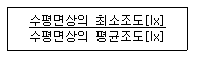
- 색온도
- 균제도
- 분광분
- 전등효율
(정답률: 72%)
71. 온수난방의 일반적인 특징에 관한 설명으로 옳지 않은 것은?
- 한랭지에서는 운전정지 중에 동결의 위험이 있다.
- 난방을 정지하여도 난방 효과가 어느 정도 지속된다.
- 현열을 이용한 난방이므로 증기난방에 비해 쾌감도가 높다.
- 증기난방에 비하여 소요방열면적과 배관경이 적게되므로 설비비가 적게 든다.
(정답률: 74%)
72. 공기조화방식에 관한 설명으로 옳은 것은?
- 전공기방식의 종류에는 단일덕트방식, 팬코일 유닛방식 등이 있다.
- 공기ㆍ수방식은 각 실의 온도제어는 곤란하나, 관리 측면에서 유리하다.
- 전수방식은 실내 공기가 오염되기 쉬우나 개별제어, 개별운전이 가능한 장점이 있다.
- 전공기방식은 중간기에 외기냉방은 불가능하나, 다른 방식에 비해 열매의 반송동력이 적게 든다.
(정답률: 54%)
73. 다음 설명에 알맞은 통기방식은?
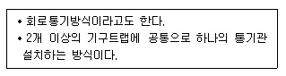
- 각개통기방식
- 루프통기방식
- 신정통기방식
- 결합통기방식
(정답률: 57%)
74. 어떤 상태의 습공기를 절대습도의 변화없이 건구온도만 상승시킬 때, 습공기의 상태변화로 옳은 것은?
- 엔탈피는 증가한다.
- 상대습도는 증가한다.
- 노점온도는 낮아진다.
- 비체적은 감소한다.
(정답률: 70%)
75. 스프링클러설비를 설치하여야 하는 소방대상물의 최대 방수구역에 설치된 개방형스프링클러헤드의 개수가 30개일 경우, 스프링클러설비의 수원의 저수량은 최소 얼마 이상으로 하여야 하는가?
- 16 m3
- 32 m3
- 48 m3
- 56 m3
(정답률: 67%)
76. 100[V], 500[W]의 전열기를 90[V]에서 사용할 경우 소비 전력은?
- 200[W]
- 310[W]
- 4⑤[W]
- 420[W]
(정답률: 70%)
77. 다음의 옥내소화전설비에 관한 설명 중 ( )안에 알맞은 내용은?
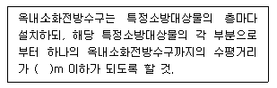
- 40
- 35
- 30
- 25
(정답률: 58%)
78. 다음 중 트랩의 봉수가 파괴되는 원인과 가장 거리가 먼 것은?
- 자기사이폰 작용
- 모세관 현상
- 서어징 현상
- 증발 현상
(정답률: 68%)
79. 의복의 단열성을 나타내는 단위로서, 그 값이 클수록 인체에서 발생되는 열이 주위 공기로 적게 발산되는 것을 의미하는 것은?
- clo
- dB
- NC
- MRT
(정답률: 83%)
80. 다음 중 운행속도가 가장 높은 엘리베이터 방식은?
- 직류 기어레스
- 직류 기어드
- 교류 2단
- 교류 1단
(정답률: 76%)
5과목: 건축법규
81. 다음 중 거실의 용도에 따른 조도기준이 가장 낮은 것은?
- 독서
- 회의
- 판매
- 일반사무
(정답률: 66%)
82. 지구단위계획 중 관계 행정기관의 장과의 협의, 국토해양부장관과의 협의 및 중앙도시계획위원회 또는 지방도시계획위원회의 심의를 거치지 아니하고 변경할 수 있는 사항에 관한 기준 내용으로 옳은 것은?
- 건축선의 2m 이내의 변경인 경우
- 획지면적의 30% 이내의 변경인 경우
- 가구면적의 20% 이내의 변경인 경우
- 건축물의 높이의 30% 이내의 변경인 경우
(정답률: 57%)
83. 정남방향의 인접 대지경계선으로부터의 거리에 따라 건축물의 높이를 제한할 수 있는 경우에 해당하지 않는 것은?
- 주택법에 따른 대지조성사업지구인 경우
- 도시개발법에 따른 도시개발구역인 경우
- 택지개발촉진법에 따른 택지개발지구인 경우
- 국토의 계획 및 이용에 관한 법률에 따른 농림지역인 경우
(정답률: 44%)
84. 지구단위계획구역 및 지구단위계획을 결정하는 계획은?
- 국가계획
- 광역도시계획
- 도시ㆍ군기본계획
- 도시ㆍ군관리계획
(정답률: 56%)
85. 준주거지역 안에서 건축할 수 있는 건축물에 해당하지 않는 것은? (단, 건축법령에 따른 건축물임)
- 숙박시설
- 종교시설
- 운동시설
- 수련시설
(정답률: 60%)
86. 문화 및 집회시설 중 공연장의 개별관람석의 바닥면적이 600m2인 경우, 이 개별관람석에 설치하여야 하는 출구의 최소 개소는? (단, 각 출구의 유효너비를 1.5m로 하는 경우)
- 1개소
- 2개소
- 3개소
- 4개소
(정답률: 55%)
87. 다음은 노외주차장의 구조ㆍ설비에 관한 기준 내용이다. ( )안에 알맞은 것은?
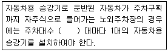
- 10대
- 15대
- 20대
- 30대
(정답률: 43%)
88. 피난안전구역의 설치와 관련된 기준 내용으로 옳지 않은 것은?
- 피난안전구역의 높이는 최소 2.7m 이상이어야 한다.
- 피난안전구역의 내부마감재료는 불연재료로 설치하여야 한다.
- 건축물의 내부에서 피난안전구역으로 통하는 계단은 특별 피난계단의 구조로 설치하여야 한다.
- 피난안전구역에 연결되는 특별피난계단은 피난안전구역을 거쳐서 상ㆍ하층으로 갈 수 있는 구조로 설치하여야 한다.
(정답률: 76%)
89. 연면적이 12,000m2인 제1종 근린생활시설과 주차장이 복합된 건축물의 경우, 주차전용건축물이 되려면 주차장으로 사용되는 부분의 연면적이 최소 얼마 이상이어야 하는가?
- 8400m2
- 9600m2
- 10800m2
- 11400m2
(정답률: 59%)
90. 건축면적이 800m2인 건축물의 층수에 산입하지 않는 계단탑의 최대 수평투영면적은? (단, 공동주택이 아닌 경우)
- 50m2
- 80m2
- 100m2
- 120m2
(정답률: 43%)
91. 공동주택과 위락시설이 같은 건축물 안에 있는 복합건축물의 피난시설에 관한 기준 내용으로 옳지 않은 것은?
- 건축물의 주요구조부를 내화구조로 하여야 한다.
- 공동주택과 위락시설은 서로 이웃하지 아니하도록 배치하여야 한다.
- 공동주택의 출입구와 위락시설의 출입구는 서로 그 보행거리가 최소 50m 이상의 되도록 설치하여야 한다.
- 공동주택(당해 공동주택에 출입하는 통로를 포함한다)과 위락시설(당해 위락시설에 출입하는 통로 를 포함한다)은 내화구조로 된 바닥 및 벽으로 구획하여 서로 차단하여야 한다.
(정답률: 67%)
92. 건축물의 건축시 해당 건축물에 대한 구조의 안전을 확인하는 경우, 건축구조기술사의 협력을 받아야 하는 대상 건축물은?
- 층수가 2층인 건축물
- 처마높이가 9m인 건축물
- 기둥과 기둥사이가 15m인 건축물
- 한쪽 끝은 고정되고 다른 끝은 지지되지 아니한 구조로 된 차양 등이 외벽의 중심선으로부터 3m 돌출된 건축물
(정답률: 45%)
93. 부설주차장의 설치대상 시설물이 판매시설인 경우, 설치 기준으로 옳은 것은?
- 시설면적 100m2당 1대
- 시설면적 150m2당 1대
- 시설면적 200m2당 1대
- 시설면적 300m2당 1대
(정답률: 75%)
94. 국토의 계획 및 이용에 관한 법령에 따른 주거지역의 세분 중 중고층주택을 중심으로 편리한 주거환경을 조성하기 위하여 필요한 지역은?
- 준주거지역
- 제1종 일반주거지역
- 제2종 일반주거지역
- 제3종 일반주거지역
(정답률: 62%)
95. 특별시나 광역시에 건축물을 건축하려는 경우, 특별시장 또는 광역시장의 허가를 받아야 하는 대상건축물의 층수 기준은?
- 6층 이상
- 16층 이상
- 21층 이상
- 30층 이상
(정답률: 63%)
96. 6층 이상의 거실면적의 합계가 10,000m2인 20층의 업무시설에 설치하여야 하는 승용승강기의 최소 대수는? (단, 8인승 승강기의 경우)
- 3대
- 4대
- 5대
- 6대
(정답률: 64%)
97. 공동주택과 오피스텔의 난방설비를 개별난방방식으로 하는 경우에 관한 기준 내용으로 옳지 않은 것은?
- 보일러의 연도는 내화구조로서 개별연도로 설치할 것
- 기름보일러를 설치하는 경우, 보일러실의 윗부분에는 그 면적이 0.5m2 이상인 환기창을 설치할 것
- 기름보일러를 설치하는 경우에는 기름저장소를 보일러실 외의 다른 곳에 설치할 것
- 오피스텔의 경우에는 난방구획마다 내화구조로 된 벽ㆍ바닥과 갑종방화문으로 된 출입문으로 구획할 것
(정답률: 60%)
98. 다음 중 건축법령상 다중이용건축물에 해당하지 않는 것은?
- 종교시설의 용도로 쓰는 바닥면적의 합계가 6000m2인 건축물
- 판매시설의 용도로 쓰는 바닥면적의 합계가 5000m2인 건축물
- 업무시설의 용도로 쓰는 바닥면적의 합계가 6000m2인 건축물
- 의료시설 중 종합병원의 용도로 쓰는 바닥면적의 합계가 5000m2인 건축물
(정답률: 55%)
99. 공동주택 중 아파트로서 대피공간을 설치하여야 하는 경우 대피공간의 바닥면적은 최소 얼마 이상이어야 하는가? (단, 각 세대별로 설치하는 경우)
- 1m2
- 2m2
- 3m2
- 4m2
(정답률: 57%)
100. 공동주택 중 기숙사인 경우, 건축물의 건축허가 신청시 에너지절약계획서를 제출해야 규모 기준은?(관련 규정 개정전 문제로 여기서는 기존 정답인 2번을 누르면 정답 처리됩니다. 자세한 내용은 해설을 참고하세요.)
- 그 용도에 상용되는 바닥면적의 합계가 500m2 이상
- 그 용도에 상용되는 바닥면적의 합계가 2000m2 이상
- 그 용도에 상용되는 바닥면적의 합계가 3000m2 이상
- 그 용도에 상용되는 바닥면적의 합계가 10000m2 이상
(정답률: 63%)
한 대의 6인승 승강기는 최대 6명을 운반할 수 있으므로, 한 대당 최대 인원은 6명이다. 따라서, 이 공동주택에서는 최소한 250세대 × 1세대당 최소 2명의 인원 = 500명 이상의 인원을 운반할 수 있어야 한다.
3대의 6인승 승강기를 설치하면, 한 대당 최대 인원 6명 × 3대 = 18명을 운반할 수 있으므로, 500명 이상의 인원을 운반할 수 있다. 따라서, 이 공동주택에는 최소 3대의 승용승강기를 설치하여야 한다.